Wakasa, Tottori: things to do, food and stays
Wakasa · Tottori
Wakasa
Highlighted on the Tottori map.

Stay
ヒュッテ白樺
Hyutte Shirakaba
Dining
とんかつ 新
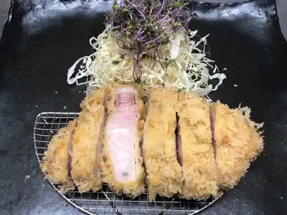
Tonkatsu Shin
わかさカフェ retro
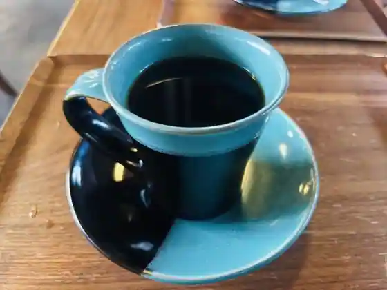
Wakasa Cafe retro
ヤマネヤ
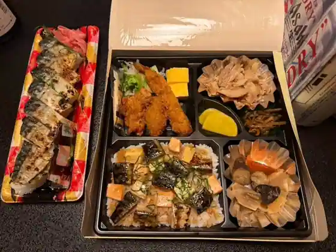
Yamaneya
弁天まんじゅう本舗
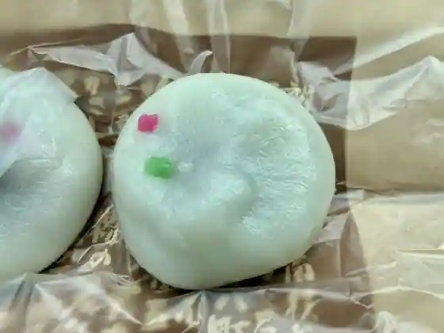
Benten Manju Honpo
道の駅 若桜
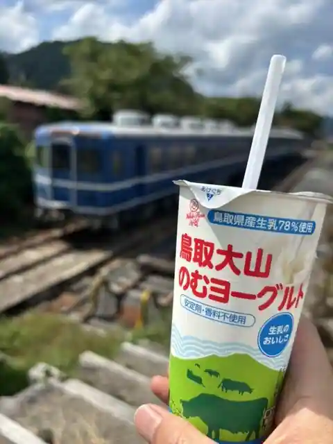
Michi No Eki Wakasa
桜ん坊
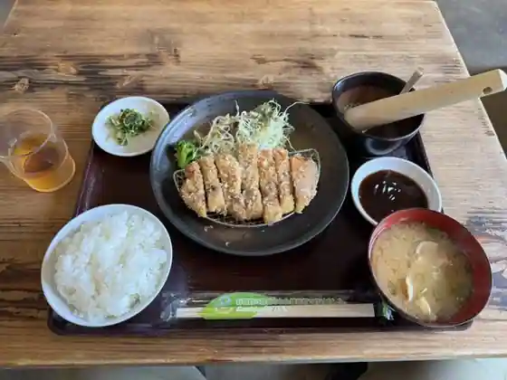
Sakura N Bo
高原の宿氷太くん
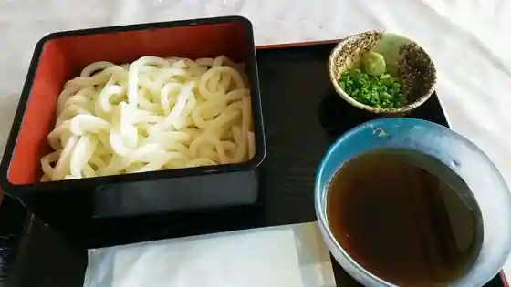
Kogen No Yado Kori Futoku N
ウルワシ ジャパニーズティ
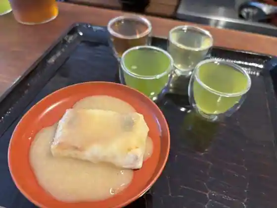
Uruwashi Japanizutei
珈琲館藍
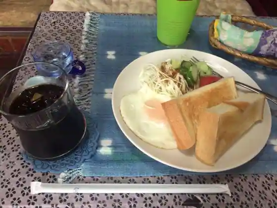
Coffee Kan Ai
ふるーる
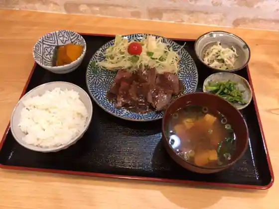
Fururu
RESTAURANT SNOW PIA
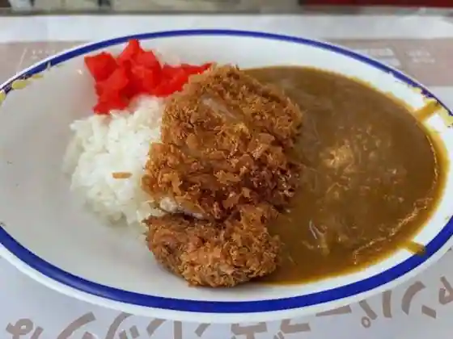
RESTAURANT SNOW PIA
カフェレストラン アルテミス
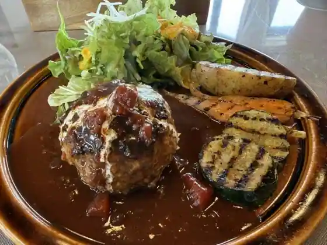
Cafe Restaurant Arutemisu
大入食堂
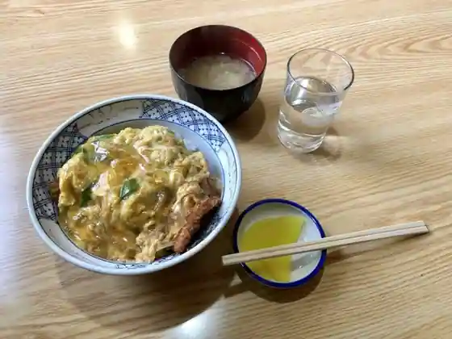
Oiri Shokudo
宮本製菓
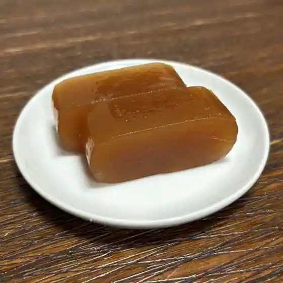
Miyamoto Seika
銀座
Ginza
Gallery cafe ふく
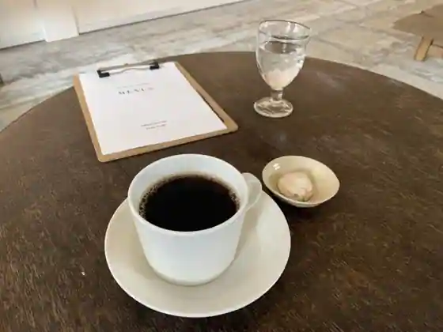
Gallery cafe Fuku
中清飲食店
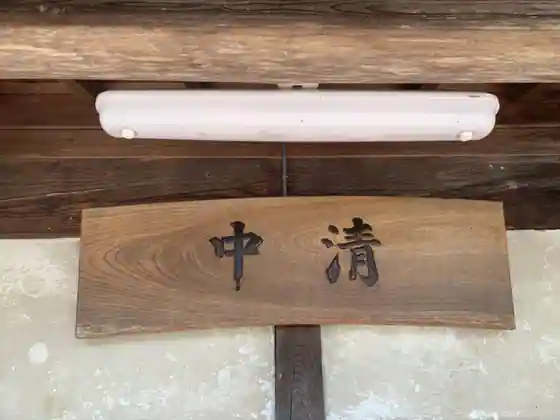
Nakakiyo Inshoku
Sights
Fudo In Iwaya Do
Wakasa Tetsudo Wakasa Eki

Ejima Shrine

Showa Omocha Kan

Kura Tori Kariya Tori

Sambyaku Ta Shi House
Wakasa Kori no Yama Ski Area
Roadside Station Wakasa Sakura N Bo
Wakasa Shrine
Kori no Yama Shizen Fureai Kan Kyo Forest
Kori no Yama Tozan
Wakasa Folk History Museum
Takumi no Kan
Benten Musume
Fiirudogemu
Omoide Bokkusu
Wakasa Town Hall